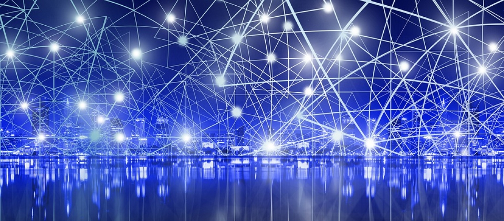

Le nombre d’utilisateurs de Facebook fait de lui un grand pollueur. Les data centers, pourtant plus qu’essentiels pour le bon fonctionnement du réseau social menacent l’équilibre environnemental de la planète.
Actuellement, les réseaux sociaux créent de véritables trafics numériques. La société actuelle nous oblige de vivre quotidiennement connectés. Toutes ces connexions et ces interactions provoquent un trafic considérable sur le Web. Comme cité auparavant, Facebook concentre à lui seul 2,27 milliards d’utilisateurs. On estime à plus de 1,7 milliards de connexions par jour sur le réseau social. Cette énorme concentration d’utilisateurs va engendrer beaucoup d’interactions sur le site. En effet, les publications, les partages, les échanges de messages ou tout simplement le stockage des données de chaque utilisateur vont générer une consommation d’énergie démentielle. Chaque année, Facebook consomme 100 millions de kWh. Mais comment ce flux et ce tel trafic peut il être géré? Les data centers sont la solution.
Les data centers sont des parcs de serveurs au sein desquelles transitent des informations provenant du monde entier. Ces données numériques doivent être protégées et stockées. De ce fait, ces serveurs doivent être allumés et en conséquence être alimentés 24h/24 et 7j/7 pour permettre à Internet de bien fonctionner. Malheureusement, ces data centers posent de nombreux problèmes.
Les data centers, étant alimentés en continu, vont produire énormément de chaleur. L’équipement informatique peut devenir tellement chaud qu’il peut provoquer un incendie. Les data centers doivent donc être obligatoirement équipés d’énormes ventilateurs dans le but de régulé cette chaleur. Mais ces climatisations sont énergivores. En effet, la consommation de ces systèmes de climatisations représente 30 à 40% de la consommation totale d’un data center. Les data centers ont besoin de beaucoup d’électricité. Ils représentent à eux seul 1,5% de la consommation d’électricité mondiale. La surconsommation et le caractère énergivore de ces centres influent directement sur la pollution de Facebook.
Un data center demande beaucoup de place. Par exemple, le data center Facebook d’Altoona est aussi grand que l’Empire State Building. La demande concernant la construction des data centers augmente de jour en jour pour Facebook. En effet, l’enjeu est de taille car le flux de données sera multiplié par 600 d’ici quelques années.
Ce flux doit être géré et stocké grâce à l’augmentation du nombre de data centers. Seulement voilà, comme expliqué auparavant, cette augmentation ne peut être que néfaste pour l’environnement due à la surconsommation qu’un data center engendre. Facebook a choisi plusieurs pays pour installé ses data centers, notamment l’Irlande. Dans ce pays, d’ici 2030, la demande d’énergétique de l’électricité augmentera de 50% dont 30% pour les datas centers.
Si l’on veut stopper la croissance des data centers pour permettre d’éviter toute pollution, cela pose également problème. En effet, éviter toute croissance mettra un frein au développement de certaines applications. De ce fait, le non-développement fait obstacle au progrès et la transition énergétique.
La pollution numérique reste un facteur de pollution très peu connu de la population. Pourtant, si Internet était considéré comme un pays en terme de consommation, il serait le 5ème ou le 6ème dans le classement mondiale. Notre utilisation quotidienne de Facebook ne nous permet pas de nous rendre compte de l’ombre que fait peser ce réseau sur l’environnement. Pourtant, avec tout ces problèmes, la pollution numérique ne fait que commencer.
Voici un extrait issu du rapport scientifique : « L’impact spatial et énergétiques des datacenters sur les territoires »
« Le problème de l’énergie et des ressources dans les data centers Les composants des data centers ainsi que l’énergie nécessaire à leur fonctionnement posent des questions en termes d’efficacité énergétique et de sobriété :
• Métaux rares et cycle de vie Comme tous les produits industriels, les équipements numériques suivent un cycle de vie en 5 étapes : l’extraction des ressources (métaux et terres rares , silice) nécessaires à leur production, la conception des équipements (souvent en Asie), leur transport vers les usagers (par bateau, par avion ou camion), la phase d’usage et la fin de vie des équipements (réparation, recyclage, enfouissement). Chacune de ces phases génère des impacts environnementaux divers avec entre autres la consommation d’énergie primaire, consommation d’eau, toxicité et pollution (de l’air, des eaux et des sols), génération de gaz à effet de serre…
• Des infrastructures de refroidissement très consommatrices Le système de refroidissement représente souvent 50% de la consommation électrique d’un data center. Il constitue donc un poste de R&D majeur, et un vecteur de performance énergétique via le freecooling, watercooling ou encore geocooling.
• Une redondance d’équipements de reprise sur problème (ou de secours) Les salles de batteries, comme les générateurs de secours, occupent un espace non négligeable dans un data center, pour une utilisation très rare (hors tests mensuels). Ce sont donc avant tout des infrastructures dormantes. Les générateurs de secours sont alimentés au fioul, et génèrent des pollutions de l’air et sonores. Les sites accueillent de grandes cuves de fioul pour les alimenter.
• Des salles de serveurs suralimentées : En 2015, l’institut Uptime a mené une étude sur les data centers nord-américains qui a révélé que 30% des serveurs de ces salles machines sont comateux (alimentés en électricité mais ne délivrant aucun service utile). De plus, les serveurs de calculs, de stockage et les équipements réseaux n’affichent pas une consommation électrique proportionnelle à leur charge. Cette absence avait été remise en avant par Barrosso et al. en 20076 , elle est toujours d’actualité en 2018. De nombreux coûts électriques statiques (indépendants de la charge de travail) sont encore très importants. Il est à noter que la concentration énergétique dans les data centers ne cesse d’augmenter : on parle aujourd’hui d’une concentration électrique pour les serveurs de 1,5 kW/m² environ, alors que les premiers data centers ne consommaient que 200 W/m² . Différentes métriques de qualité ont été proposées (notamment par GreenGrid) afin de mesurer et de comparer les impacts des data centers. La plus connue, le PUE (Power Usage Effectiveness), permet d’appréhender de manière relative le surcout énergétique des infrastructures (bâtiments, refroidissement…) par rapport au coût électrique du numérique. Ainsi, un data center qui affiche un PUE de 2 injecte autant d’énergie électrique dans l’informatique du data center que dans l’infrastructure d’hébergement (refroidissement, éclairage, reprise sur problème…). »